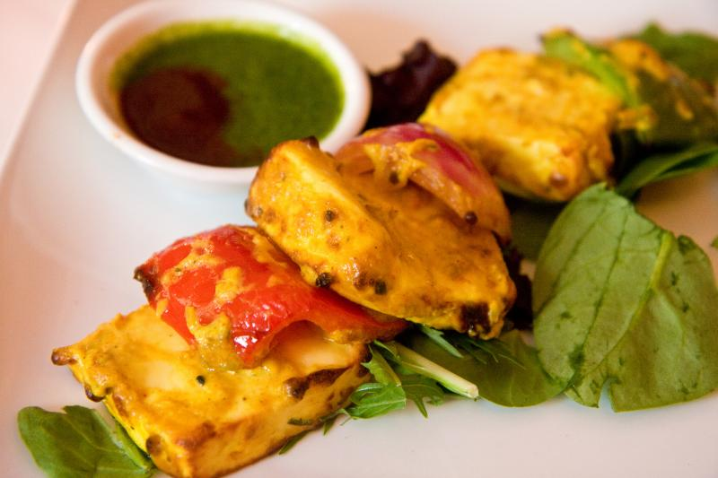
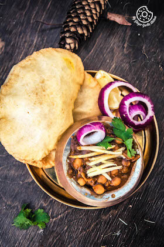
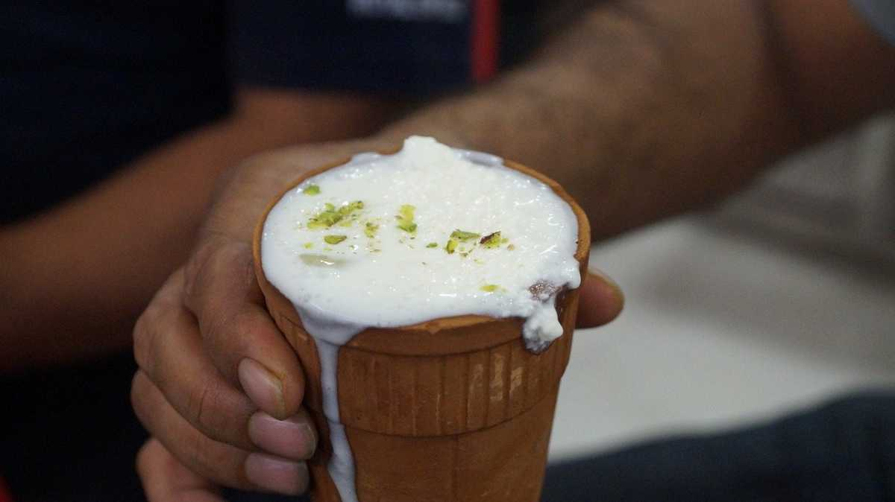
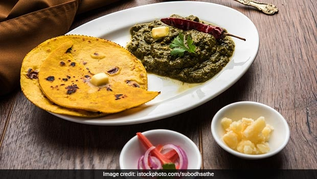

The curry was developed in 1947 by the founders of the Baba Chicken restaurant in Punjab, India.[1][9] The curry was made "by chance" by mixing leftover chicken in a tomato gravy, rich in butter and cream.[10] In 1974, a recipe was published for "Murgh Makhani (Tandoori chicken cooked in butter and tomato sauce)". In 1975, the English phrase "butter chicken" curry first appeared in print, as a specialty of the house at Gaylord Indian restaurant in Manhattan. In Australia and New Zealand, it is also eaten as a pie filling. The curry is common in India and many other countries
Paneer tikka is an Indian dish made from chunks of paneer marinated in spices and grilled in a tandoor.It is a vegetarian alternative to chicken tikka and other meat dishes.[3][4][5] It is a popular dish that is widely available in India and countries with an Indian diaspora.
At its core, chole bhature is a combination of two dishes: chole - a spicy chickpea curry, and bhature - a type of fried bread made with maida flour. Popular throughout North India, the dish was invented in Delhi in the 1940s. It is commonly accompanied by onions, pickles, mint chutney, and chilled lassi. Chole bhature can be found at most street carts in North India, but it can also be easily prepared at home. Although it can be eaten any time of the day, chole bhature is especially popular in the morning, when bhature are filled with potatoes or cottage cheese, making it a heavy, nutritious breakfast
Lassi, a creamy, frothy yogurt-based drink, blended with water and various fruits or seasonings (such as salt or sugar), that originated in Punjab, India. There are many varieties, but most are either sweet or salted; the former is blended with curd or fruit (such as mango) or is whisked with sugar, whereas the latter is mixed with salt and/or spices, typically cumin or cardamom. Traditionally, lassi is served in a handleless clay cup called a kulhar, and extra malai (clotted cream) may be spooned on top before serving. The drink has spread to the rest of the world, especially to Great Britain and countries tied to the former British Empire.
Sarson ka Saag is a vegetarian dish which is made using seasonal mustard leaves along with other leafy veggies like bathua (Chenopodium or pigweed), spinach and radish leaves. A mix of spices is stirred in to build up the flavour and it is then served hot with makki ki roti topped with white butter